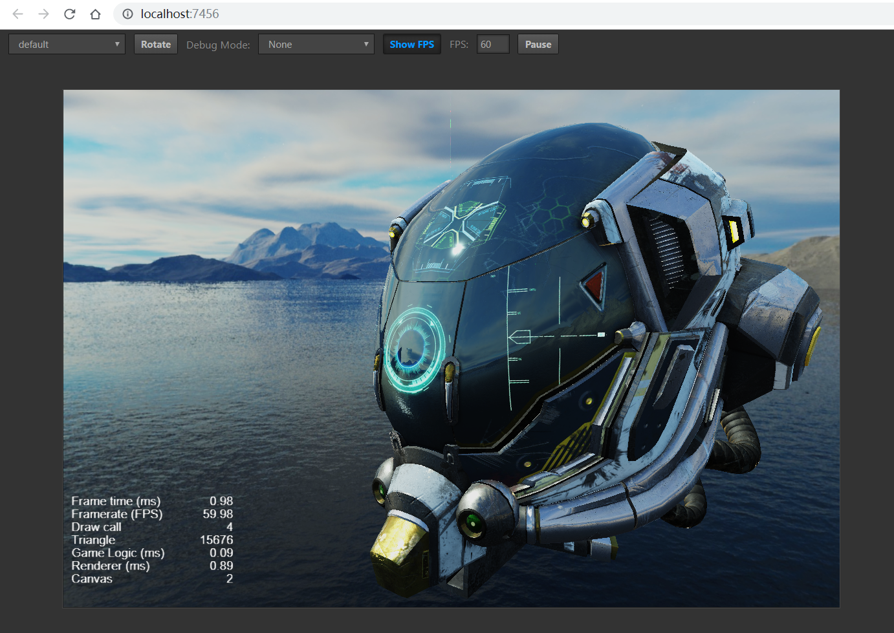
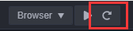
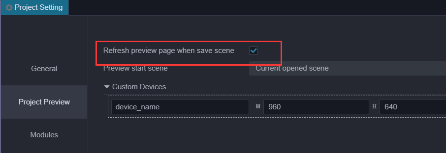
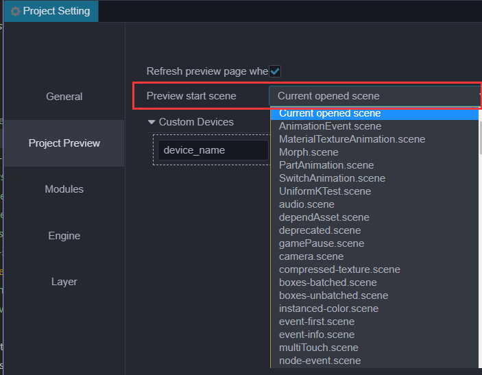

Preview In Browser
How To Preview
Click the Preview button on top of editor window to see the game in action. After clicking, editor will launch the game in your default browser. We recommend Chrome as the browser of choice, since the developer tools in Chrome are most advanced in web debugging and inspecting.
There are a number of control in Preview page:
- On the left are viewport size presets to simulate how your game look on mobile devices.
- Rotate button to toggle between landscape and portrait view.
- Debug Mode let you control the severe level of logs to be shown.
- Show FPS toggle framerate and draw call stats display.
- FPS framerate cap.
- Pause to pause game.

Refresh Preview Page

If we want to refresh the preview page after some modified, just refresh in browser or click the refresh button in editor. The difference is that click refresh button in editor will refresh all preview pages.If you want the preview page to refresh automatically, just save the scene.The settings for saving scene auto-refresh can be enable in Project Settings-> Project Preview.

Scene of Preview
The editor will use the current scene as start-scene of preview, we can modified it in Project Settings-> Project Preview. For more information, please refer to the Project Settings documentation.

Preview In Mobile
There are the following ways to debug the preview page on the mobile phone:
Use the mobile browser preview mode of Browser Developer Tools
Scan preview QR code
Move the mouse to the ip preview address on the left side of the editor toolbar, and a preview QR code will be displayed, which can be scanned with your mobile phone.
Directly Enter the preview address in the mobile browser
Note: Make sure the mobile phone and the computer is on the same network segment.Since there will be multiple networks on the computer, if the IP address of the preview URL in the editor is incorrectly, you can modify it in
Preferences-> General Settings-> Select Local Preview Address. Please refer to the description of thepreference settings documentation.
Custom Preview Template
We can add custom preview template to change the preview result,just put your template in preview-template folder in the project dictionary.Editor also use template to render to index.html. If there is a file named index.ejs in this dictionary,editor will use it as the template that render to index.html.Your can click the menu in editor Project ——> Generate Preview Template to get the latest template used in editor.
project-folder
|--assets
|--build
|--preview-template
|--index.ejs
Note: There are some preview menu items and preview debugging tools in the preview template, We recommended you keep all the content and just add what you need or modified code carefully to avoid some unexpected errors.. In addition, if
index.htmlandindex.ejscoexist,index.htmlwill replaceindex.ejsas the render-template for preview page.
Examples of Use
Code of this example is stored in the test-case-3d repository.
Get lasted preview template
Click the menu Project-> Generate Preview Template to generate a preview template, and the address generated by the preview template will be printed in the console.
Add script in folder
Add the scripts you need to use in folder, such as
test.js, where<%-include (cocosTemplate, {})%>contains the default logic for starting the game.test.jsin the example below will be loaded after the game starts.Modify
index.ejsOpen
index.ejsand modify as follows:
<html>
...
<body>
...
<%- include(cocosTemplate, {}) %> // Game start processing logic
<script src="/test.js"></script> // New script
</body>
</html>
- Place
test.jsin thepreview-templatefolder like blow
|--preview-template
|--index.ejs
|--test.js
Preview
Now, you can refresh your preview game to see changes.
Add Custom Devices Info
Open Project ——> Project Preview. Custom device info can be modified on this page, and changes will work after refreshing the preview page.

Debugging with browser Developer Tools
Take Chrome for example, open menu and choose Developer/Developer Tools to open the Developer Tools. It is possible to debug source code, add breakpoints, check the call stack and use step control during debugging.
To learn more about using DevTools, please read the Chrome Dev Tools User Guide documentation, or other browser's developer documentation.
Browser compatibility
The desktop browsers tested during Cocos Creator 3D development include: Chrome, Firefox (Firefox), other browsers can be used as long as the kernel version is high enough. Please do not enable IE6 compatibility mode. Browsers tested on mobile devices include: Safari (iOS), Chrome, QQ browser, UC browser, and WeChat built-in Webview.
Continue to the Introduction To Preview Process And Common Error Handling documentation.